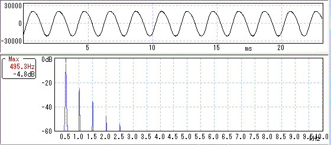
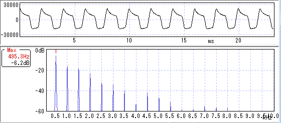
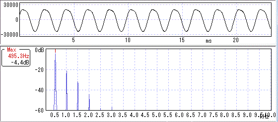
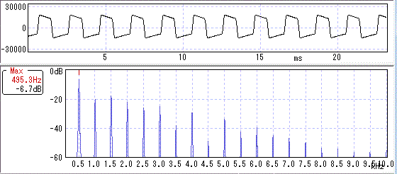

歪みと波形・倍音その5（RetroValve）
2014年12月01日 カテゴリー：歪みと波形・倍音
真空管代替部品「RetroValve」（スタンダードゲイン）を購入したので波形・倍音を調べました。
歪みと波形・倍音 記事一覧
RetroValveのメーカーサイト→Jet City Custom
【Fender Champ Amp AA764改】（12AX7をRetroValveに変更）
（ローゲイン）

真空管使用のときと同様、偶数次倍音が多く出てきています。
（ハイゲイン）※ちょっとゲインが低めだったようです。

真空管使用のときと波形が同じですが、出力管（6BQ5）での歪みかもしれません。
【Tube Drive 200V】（RetroValve使用）
（ローゲイン）

真空管使用のときと同様、偶数次倍音が多く出てきています。
（ハイゲイン）

真空管使用のときより波形が角ばっている感じです。偶数次倍音より奇数次倍音が若干多い気がします。
・総評（のようなもの）
RetroValveは真空管と同じような倍音となることがわかりました。真空管と違って交換が不要で発熱も少ないためとても便利だと思います。中の回路を調べたいところですが、チップ部品が使ってあるので難しいようです。うまく利用すれば良い歪みエフェクターが作れるかもしれません。